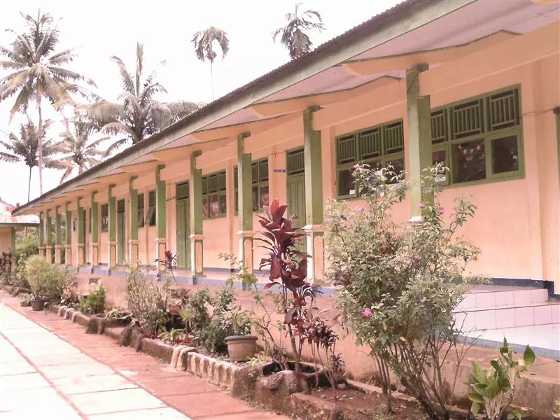
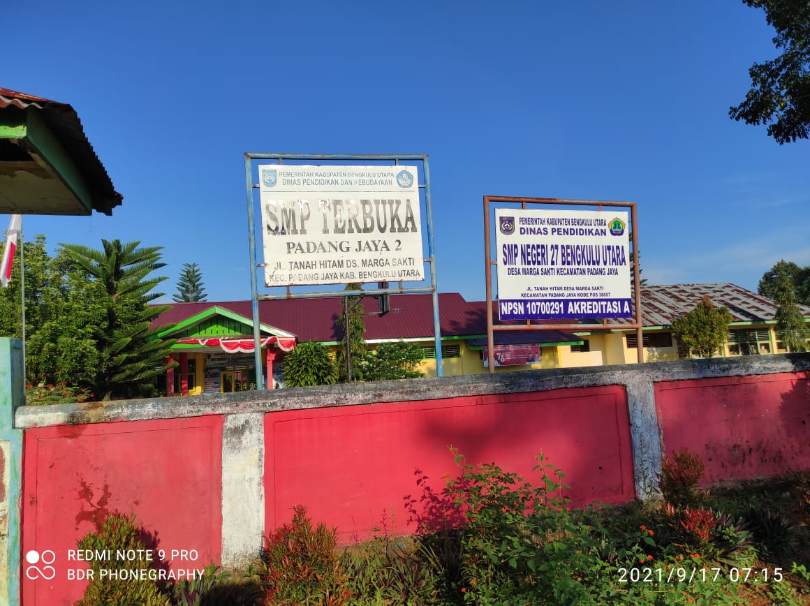
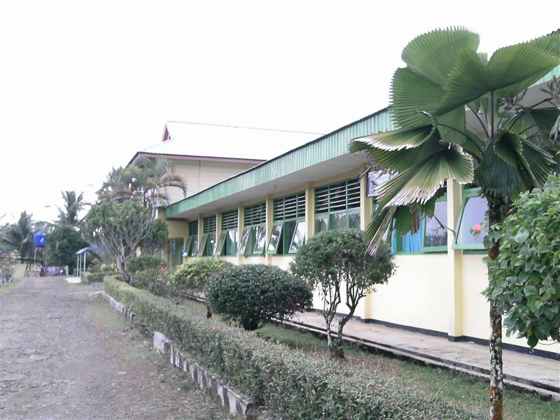
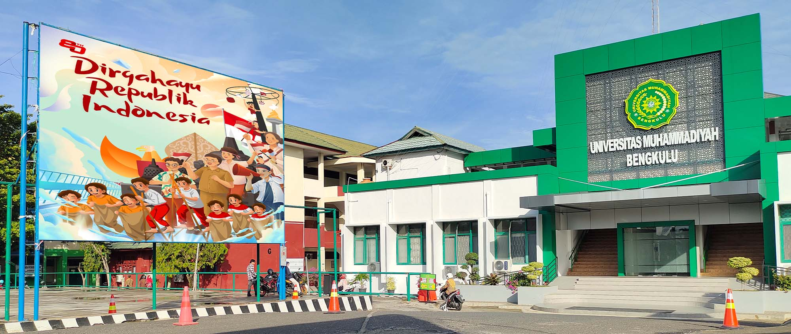

Halo! Aku mahasiswi UMB program studi Sistem Informasi yang suka menulis.
aida nur harini

Pendidikan
Perjalanan pendidikan saya dimulai dari

SDN 087 Bengkulu Utara

SMPN 27 Bengkulu Utara

SMAN 8 Bengkulu Utara

Universitas Muhammadiyah Bengkulu
Skill
Menulis
Saya memiliki ketertarikan dalam bidang penulisan, khususnya menulis cerita pendek dan menciptakan puisi.
Bola Basket
Selain menulis saya juga tertarik dengan permainan bola basket.
Motivasi
Sebagai mahasiswa Sistem Informasi, saya ingin terus mengembangkan kemampuan, baik dalam bidang akademik maupun kreativitas. Saya berharap dapat menggabungkan kemampuan berpikir, teknologi, dan kreativitas untuk menghasilkan sesuatu yang bermanfaat. Saya percaya bahwa setiap orang memiliki proses dan waktunya masing-masing untuk berkembang. Tidak harus selalu menjadi yang paling hebat, tetapi harus memiliki kemauan untuk terus belajar dan tidak takut memulai sesuatu yang baru.